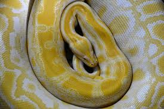

Yellow
For me, yellow is a very happy color that represents many things in nature. It could be viewed as the color of the sun, or the color of pollen and bees. I believe that yellow especially looks good on cars.
For me, yellow is a very happy color that represents many things in nature. It could be viewed as the color of the sun, or the color of pollen and bees. I believe that yellow especially looks good on cars.